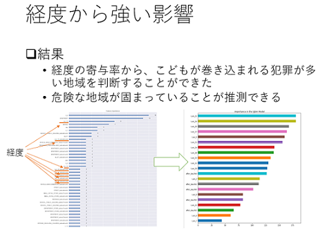

Achievement・Products
研究
講義音声字幕化に向けた認識における言語モデル構築の低コスト化（2018年度岩手県立大学ソフトウェア情報学部 卒業論文） 要旨
卒業論文として講義音声を字幕化する上で必要な音声認識システムの言語モデル構築にかかる時間や手間の低コスト化を行いました。
Emotion Recognition from EEG
大学院研究テーマ
IT関連の取り組み・成果物
フクレコ（2016年度 岩手県立大学PBL優秀賞） GitHub
学部3年次、他大の機械系学部から県大の情報系学部に編入してきてプログラミングの勉強のために取り組んだWebサービス開発。 大学のPBLという制度を利用し、 6人チームで「フクレコ～個人の体格に合わせた服装推薦システム～」を制作しました。 このWebサービスは「人工知能が客観的に見て似合う服装を推薦してくれる」をコンセプトにしており、体格分析システム部でChainerを用いてDNNによる分析を行いました。
この開発で自分はチーム代表を務めたほか、肩幅検出のプログラムを作成しました。
mixme（2018年度 某社ハッカソンインターン最優秀賞）
修士1年の夏に参加したハッカソン型インターンシップで開発したWebサービス。サービスの提案からシステム構築、ビジネスモデルの提案まで行いました。
この開発ではチーム内でフロントエンド・バックエンド・機械学習・Webデザインの4つに分かれて開発を行いました。 自分は機械学習班でレコメンド機能の構築に関わり、プロトタイプ用学習データ構築のためのWebスクレイピングプログラムや 文章をベクトル化する上で必要な形態素解析のプログラムの作成など前処理を中心に取り組みました。
ある地域の予測犯罪件数を用いた防犯ソリューションの提案（2018年度 FJCTデータサイエンスインターン） スライド

修士1年の夏に富士通クラウドテクノロジーズ (FJCT) のデータサイエンスインターンシップに参加しました。
与えられたあるデータを基に機械学習を用いて予測を行い、予測結果を説明した上で本格的な予測プロジェクトの受注を目指すということを行いました。
このインターンの中で、自分は特に経度と子供が巻き込まれる犯罪に着目して分析を行い、予測結果から寄与率の偏りを調べたりしました。
詳細はBlog「FJCTのデータサイエンスインターンに参加してきました」に記載しています。
その他
TrySail画像分類器の作成とかサンタクロース生成とかやったりしました。詳しくはGitHubやBlogを見てください。
ゲーム関連の成果物
夕刻のオリオン
大学3年次に「APIS NEST」というサークルに参加し、「夕刻のオリオン」というノベルゲームの制作に加わりました。
この中で、自分は吉里吉里を用いてスクリプト作業やデバッグ作業を行いました。
この他、複数のノベルゲームのスクリプト作業を行ったことがあります。
大学生協・学生委員会関連の取り組み
2017-2018岩手県立大学生協新入生サポートセンター代表
2017-2018年の新入生サポートセンターの代表を務めました。
新入生サポートセンターは、大学に入学してくる新入生に対し、アパート紹介・学生総合共済の紹介・PC、電子辞書などの紹介・大学生協のサービスの紹介などを行う場所で、 大学生協職員と生協学生委員会、アドバイザー（学生アルバイト）、各業者等との協同で運営を行っています。
ここでの代表として、
- アドバイザー募集資料作成と説明会、面接
- アドバイザー研修資料作成及び研修の実施
- 新入生サポートセンター運営
- アドバイザーのシフト管理
- 新入生対応
などの業務に携わりました。
このとき、これまでの業務内容で改善可能な点が存在したため、IT化を進めることで業務改善の工夫を施しました。
生協学生委員会再立ち上げ及び初代委員長
大学生協のある大学の多くは生協学生委員会が存在しており、大学生協理事会の補助執行機関の一つとして、生協組合員の学生生活がよりよいものになるよう活動を行っています。 県大も委員会自体は存在していましたが、年々人が減少し、活動がほぼ停止していたため、新たに生協学生委員会を立ち上げ、 メンバーの募集から行った上で委員長として学部4年から修士1年の7月まで活動を行いました。
委員長を務める間、
- 生協学生委員会立ち上げにおけるメンバー募集説明会
- オープンキャンパスにおける受験生対応
- 袴ファッションショーの企画・実施
- 学生総合共済の給付事例紹介活動（第2回共済ボードコンテスト最優秀賞）
- 学内イベントでの出店
- 新入生サポートセンター対応
- 合格者向け説明会実施
- 新入生向けオリエンテーションの企画・実施
- 東北ブロック運営委員会・東北ブロック学生委員会などへの参加
などの活動を行ってきました。
また、過去の学生委員会では紙で資料が残されており、データが存在しませんでした。そこで、活動ごとに提案書・企画書・タイムテーブル・活動報告書・議事録など各種資料はPCで作成した上で 関係者であれば誰でも閲覧・利用できるようにするなどの工夫を施しました。
現在は東北ブロック院生委員会立ち上げの動きに加わり、東北地区の各大学の院生と協同で学生委員会の活動の補助や、院生がよりよい学生生活を送れるよう活動を行っています。